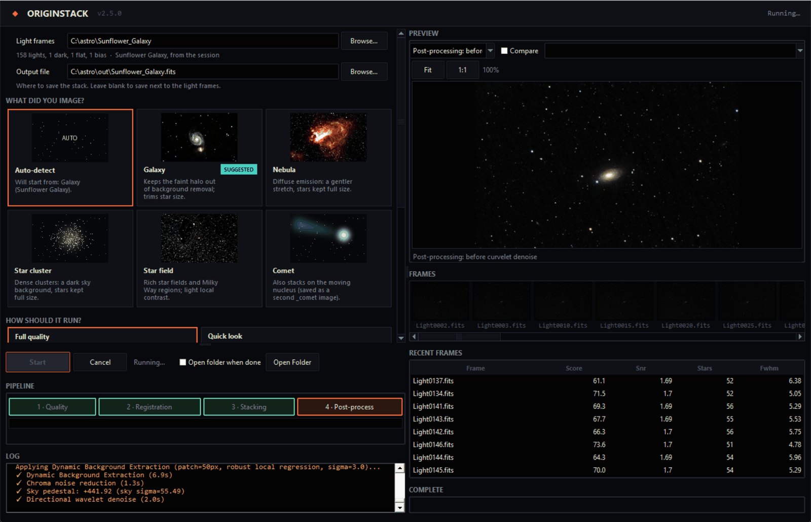
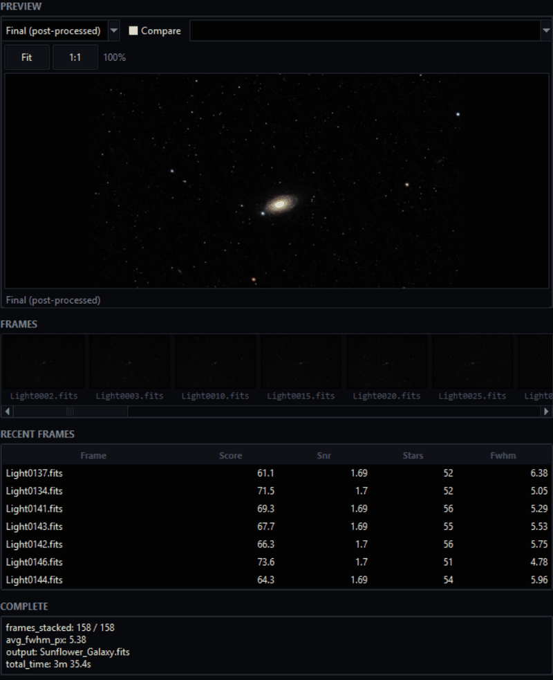
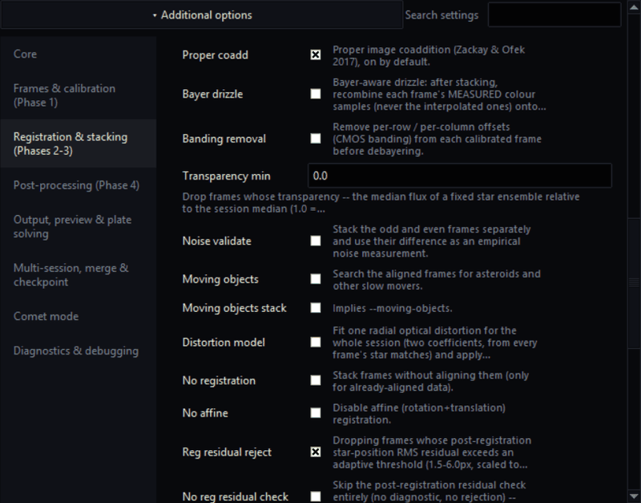
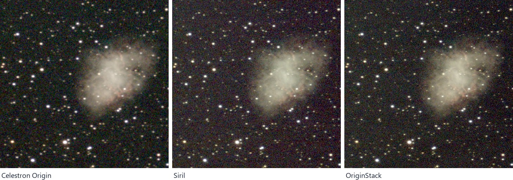
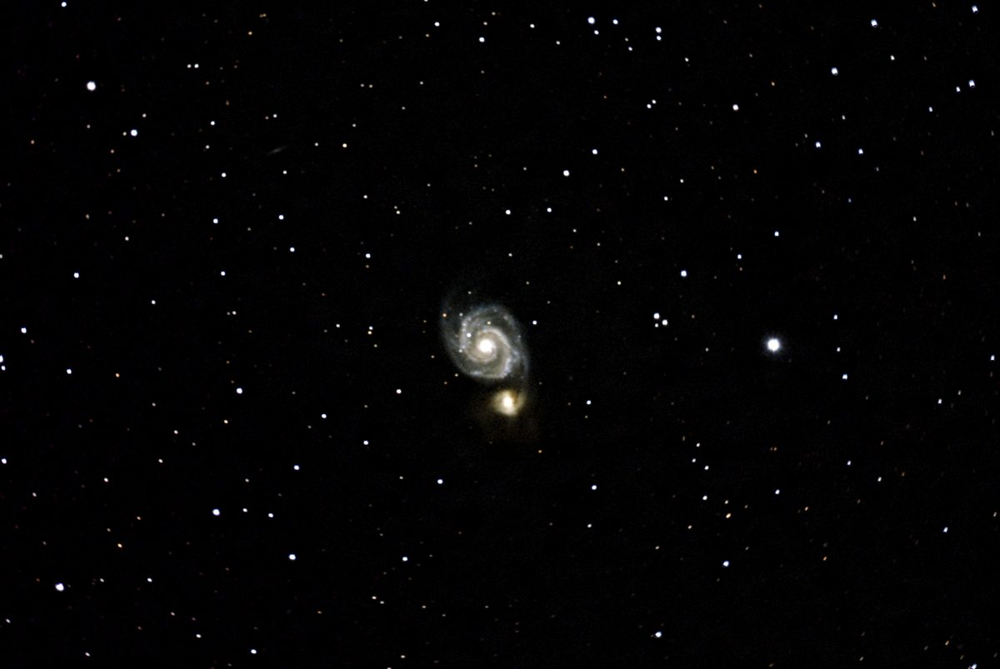
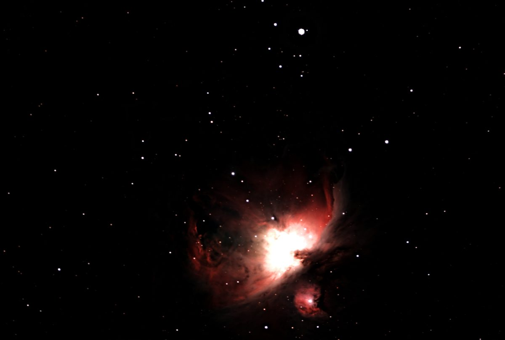
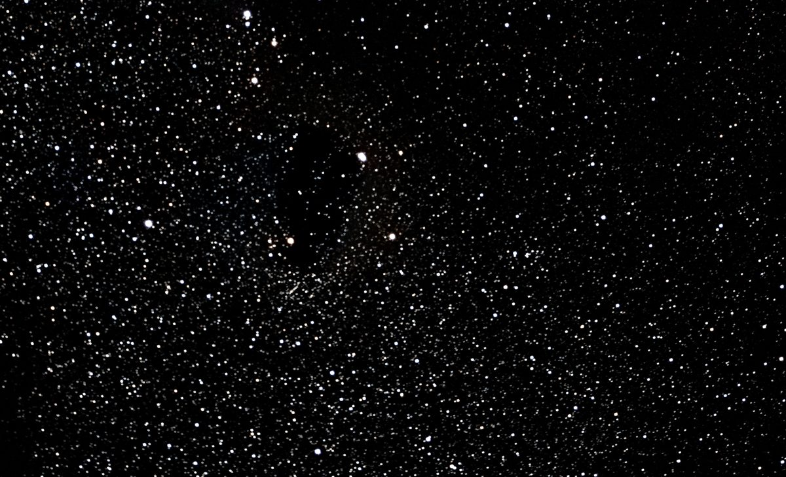
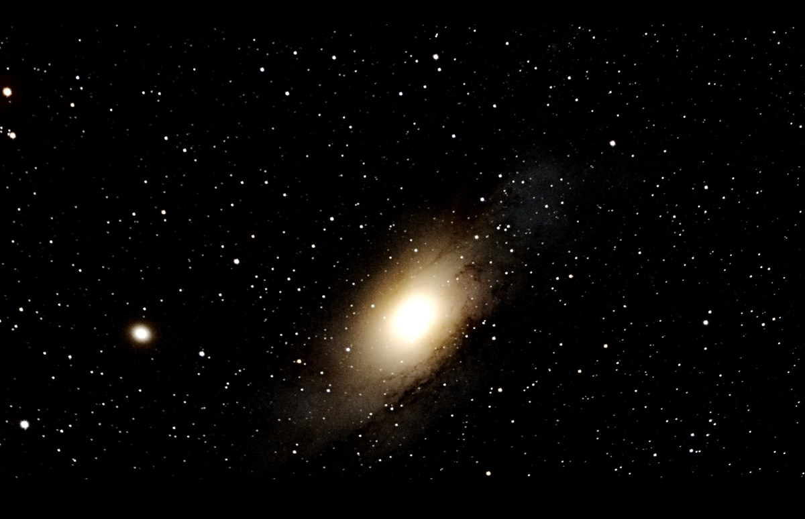
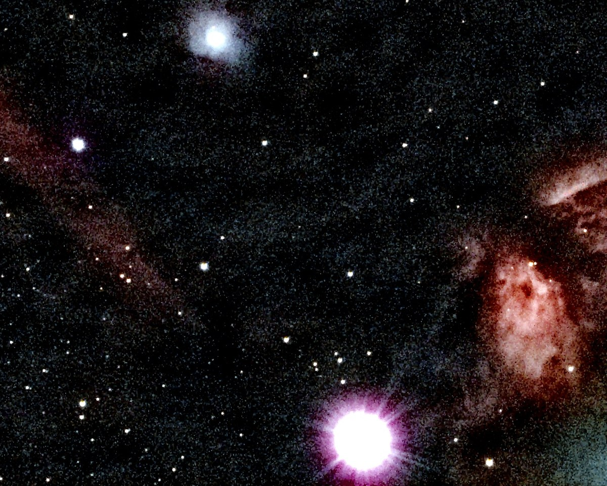

Una notte di frame in circa un minuto e mezzo
La Nebulosa Omega, 114 frame, su un desktop a 8 core: 89 secondi dai file grezzi all'immagine finita, contro i 132 della versione precedente. Il blocco rosso è la parte che rende bella l'immagine; il resto serve a far combaciare 114 frame.
- Carica, calibra, valuta32.7 s
- Registra9.4 s
- Allinea e integra24.6 s
- Rifinisci l'immagine15.6 s
- Disco e preparazione6.8 s
Carica, calibra, valuta
Ogni frame viene corretto con i tuoi bias, dark e flat, convertito dal mosaico di colori del sensore in un'immagine e valutato per nitidezza e rumore. I frame chiaramente scadenti vengono scartati.
Registra
I frame vengono allineati con precisione inferiore al pixel, compresa la lenta rotazione di campo prodotta da una montatura alt-az come quella dell'Origin.
Allinea e integra
I frame allineati vengono combinati con rigetto degli outlier, così tracce di satelliti, pixel caldi e raggi cosmici vengono eliminati invece di finire nella media.
Rifinisci l'immagine
Vengono trattati gradienti del fondo, colore e rumore, poi al risultato viene applicato uno stretch per la visualizzazione. Il file FITS salvato resta lineare, pronto per qualsiasi lavorazione successiva.
I frame vengono elaborati uno alla volta, quindi 500 frame richiedono più o meno la stessa memoria di 50. I file temporanei occupano circa 100 MB di disco per frame durante l'esecuzione; quando c'è spazio, i frame allineati vengono invece tenuti in memoria, lasciandone sempre libero il 30%.
Guardalo lavorare, o salta le impostazioni
Indica all'app una cartella di frame, di' cosa hai ripreso (o lascia che lo capisca da sola) e premi Avvia. Ogni impostazione ha una spiegazione di una riga, e i valori predefiniti scelgono il resto per il tuo soggetto. Queste sono schermate reali dello stacking dei frame della Galassia Girasole usati nei confronti più sotto. Sei nuovo nell'elaborazione delle immagini del Celestron Origin? La guida passo passo parte dalla cartella di sessione salvata dal telescopio.




Come si confronta con Siril e DeepSkyStacker
Stessi frame, stessi bias, dark e flat, una sola macchina, ogni strumento con impostazioni di tipo predefinito. Tre sessioni Celestron Origin: la Nebulosa Omega (114 × 30 s), la Galassia Girasole (158 × 20 s) e la Galassia dello Scultore (532 × 10 s).
| Sessione | Solo stack | OriginStack, immagine finita | Picco di memoria | Larghezza stelle |
|---|---|---|---|---|
| Omega, 114 frame | 68 s / 86 s | 90 s | 10.6 / 6.5 GB | 4.40 / 4.56 px |
| Girasole, 158 frame | 84 s / 106 s | 107 s | 12.8 / 7.8 GB | 3.52 / 3.60 px |
| Scultore, 532 frame | 169 s / 195 s | 184 s | 9.2 / 11.2 GB | 2.69 / 3.01 px |
Larghezza delle stelle sulle stesse stelle (più piccola = più nitida)
Omega
Girasole
Scultore
Cosa dicono i numeri
Nitidezza: più nitido di Siril su tutte e tre. Sulle stesse stelle OriginStack è più stretto del 4% sulla Omega (4.40 contro 4.56 px), dell'1.5% sulla Girasole e del 10% sulla Scultore. Due modifiche lo hanno portato lì: la coaddizione ottimale delle immagini, attiva per impostazione predefinita, che pesa ogni scala di dettaglio in base a quanto ciascun frame era nitido, trasparente e rumoroso (Zackay & Ofek, 2017); e la correzione di un passaggio sui pixel caldi che appiattiva il picco della maggior parte delle stelle luminose in ogni frame — sulle stelle sottocampionate il centro di una stella sembra esattamente un pixel caldo a un test che confronta solo un pixel con i suoi vicini. Ha anche usato più frame: 114, 158 e 532, dove Siril ne ha usati 111, 157 e 525.
Rumore: più silenzioso di Siril a parità di nitidezza. Uno stack più nitido è più rumoroso per pixel, quindi il confronto equo sfoca ogni canale di OriginStack finché le sue stelle sono larghe esattamente quanto quelle di Siril. A quel punto il suo rumore, rosso/verde/blu, è 0.81, 0.88, 0.89 volte quello di Siril sulla Omega, 1.00, 0.75, 0.93 sulla Girasole (le sue stelle in rosso erano già larghe quanto quelle di Siril) e 0.97, 0.92, 0.89 sulla Scultore. Senza pareggiare, per pixel, è 0.92, 1.05, 1.06; 1.00, 0.84, 0.97; e 1.16, 1.08, 1.28 — più le stelle sono nitide, più quel numero è alto.
Velocità: più veloce di Siril su tutte e tre. Fino allo stack, eseguiti uno dopo l'altro sulla stessa macchina: 68 s contro gli 86 s di Siril sulla Omega, 84 contro 106 s sulla Girasole e 169 contro 195 s sulla Scultore. OriginStack svolge ancora lavoro per frame che Siril non fa — valutazione della qualità, bilanciamento del bianco e rilevamento delle stelle su ogni frame — e lo recupera nella registrazione e nello stacking. I tempi di entrambi gli strumenti sono variati fino a un terzo tra esecuzioni identiche nel corso della giornata (Siril da solo ha impiegato da 55 a 86 s sulla Omega), quindi confronta all'interno di una riga. L'immagine finita costa altri 14-23 s.
Memoria e disco. OriginStack esegue un processo per core fisico e tiene in memoria i frame allineati quando c'è spazio: 9.2 GB sulla Scultore contro gli 11.2 di Siril, e 10.6 e 12.8 GB sulle due sessioni più brevi, dove tutto stava in memoria (Siril 6.5 e 7.8). Lo spazio su disco temporaneo è minore sulle due sessioni più brevi (11 e 15 GB contro 17 e 23 GB) e maggiore sulla Scultore (63 contro 57 GB).
DeepSkyStacker ha impiegato 14 min 8 s sulla Omega, ha prodotto stelle più morbide degli altri due e con le impostazioni predefinite ha lasciato strisce di pixel caldi e alcuni frame registrati male.
Il punto forte di OriginStack è ciò che viene dopo lo stack: rifinisce l'immagine nella stessa esecuzione senza configurazione, spiega la nottata con la diagnostica, risolve la posizione nel cielo sul tuo computer, funziona completamente offline se lo chiedi, e fa il resto che gli altri strumenti lasciano a te. Su uno stack semplice ora è più nitido di Siril su tutte e tre le sessioni, più silenzioso a parità di nitidezza e più veloce su tutte e tre. Tutte e tre le sessioni sono state rimisurate il 2026-10-02 con questa versione; il dato di DeepSkyStacker viene da un'esecuzione precedente e non è stato ripetuto. Questi numeri sono già stati corretti in passato: una versione precedente di questa pagina sopravvalutava la nitidezza per via di come venivano scelte le stelle da misurare, e un'altra attribuiva al rilevamento dei raggi cosmici un miglioramento del rumore che in realtà era una levigatura. Tre sessioni da una sola camera sono un campione piccolo, ed entrambi gli strumenti sono stati lasciati con impostazioni di tipo predefinito. tools/bench_vs_siril.py ripete tutto questo sui tuoi frame.
E con lo stack del telescopio stesso
Ogni cartella di sessione del Celestron Origin contiene anche il risultato prodotto dal telescopio, FinalStackedMaster.tiff. Quattro sessioni, gli stessi light per tutti e tre: la Galassia Occhio Nero (81 × 20 s), la Galassia Girasole (158 × 20 s), la Nebulosa del Granchio (133 frame) e l'Ammasso di Ercole (56 frame). OriginStack con i valori predefiniti, Siril con le impostazioni indicate sopra.
| Sessione | vs Origin: larghezza stelle | vs Origin: rumore | vs Siril: larghezza stelle | vs Siril: rumore |
|---|---|---|---|---|
| Occhio Nero, 81 frame | 8.15 / 8.38 px | 1.00 / 1.04 / 1.06 | 8.21 / 8.26 px | 0.94 / 1.09 / 0.97 |
| Girasole, 158 frame | 3.54 / 4.25 px | 0.96 / 0.93 / 0.95 | 3.50 / 3.58 px | 1.02 / 1.03 / 1.02 |
| Granchio, 133 frame | 2.54 / 3.50 px | 1.00 / 0.92 / 0.95 | 2.54 / 2.77 px | 1.04 / 0.99 / 1.01 |
| Ercole, 56 frame | 5.67 / 5.98 px | 0.99 / 0.96 / 1.01 | 5.68 / 5.74 px | 1.00 / 1.04 / 1.01 |
Larghezza delle stelle rispetto a quella di OriginStack, sulle stesse stelle (più piccola = più nitida)
Galassia Occhio Nero
Galassia Girasole
Nebulosa del Granchio
Ammasso di Ercole
Cosa dicono i numeri
Nitidezza: lo stesso ordine in ogni sessione. OriginStack, poi Siril, poi l'Origin. Lo stack del telescopio è il più morbido dei tre: le sue stelle sono più larghe di quelle di OriginStack del 4% sulla Occhio Nero, del 17% sulla Girasole, del 27% sul Granchio e del 5% sull'Ammasso di Ercole, e la maggior parte di questo è nel blu. Siril è vicino a OriginStack, più largo dall'1 all'8%.
Rumore: un pareggio. Misurati alla scala di una stella — il rumore che decide quanto debole può essere una stella che riesci a vedere — tutti e tre sono entro pochi punti percentuali l'uno dall'altro in ogni canale. La nitidezza in più di OriginStack non costa nulla in rumore.
Cosa fa meglio l'Origin già di serie: l'immagine che salva ha già i gradienti del cielo rimossi. OriginStack li rimuove nei suoi passaggi di finitura; lo stack di Siril qui non ne ha.
Ha scoperto due difetti in OriginStack. Mettere le immagini finite fianco a fianco ha mostrato un cielo puntinato sui soggetti piccoli e deboli e dischi blu sulle stelle saturate. Entrambi sono stati corretti, e i numeri qui sopra sono stati rimisurati in seguito.

Come è stato misurato: il TIFF dell'Origin è lineare ma poggia su un grande piedistallo, quindi i nuclei delle stelle più luminose vengono tagliati; ogni stack è stato portato sulla scala di luminosità di OriginStack con un guadagno per canale di colore, misurato dove l'immagine è lineare, e le stelle tagliate sono state escluse. I rapporti di rumore dipendono da quel guadagno, quindi leggili con un margine di più o meno il 5-10%. Quattro sessioni da un solo telescopio sono un campione piccolo. tools/bench_vs_origin.py lo ripete sui tuoi frame.
Fatto con OriginStack
Tutte da frame grezzi del Celestron Origin, integrati ed elaborati da OriginStack, sotto cieli misurati di Bortle 7-9 (forte inquinamento luminoso, giardino/terrazzo, non un sito buio) -- vedi il README per le misure e il metodo di ogni immagine.





Installalo
Programma di installazione per Windows
Software di stacking gratuito per Windows 10 e 11. Scarica il file di installazione dall'ultima release ed eseguilo. Si installa solo per il tuo utente, aggiunge una voce nel menu Start e un programma di disinstallazione, e non richiede Python.
Preferisci lo zip? Usa prima Estrai tutto, poi esegui OriginStack.exe dalla cartella estratta. Eseguirlo dall'interno dello zip non funziona.
App per macOS
Scarica lo zip per il tuo Mac dall'ultima release: macos-arm64 per Apple silicon (M1 e successivi, richiede macOS 14 o successivo) o macos-x86_64 per un Mac Intel. Apri lo zip e trascina OriginStack in Applicazioni. Non richiede Python.
L'app non è ancora firmata da Apple, quindi macOS blocca il primo avvio. Fai Ctrl-clic su OriginStack e scegli Apri, poi di nuovo Apri; su macOS 15 e successivi, prova ad aprirla una volta, poi scegli Apri comunque in Impostazioni di Sistema, Privacy e sicurezza. Oppure rimuovi il contrassegno di download nel Terminale:
xattr -dr com.apple.quarantine /Applications/OriginStack.app
Le versioni per Mac sono state usate meno sul campo rispetto alla versione per Windows.
Pacchetto per Linux
Scarica OriginStack-<version>-linux-x64.tar.gz dall'ultima release, estrailo ed esegui il programma di installazione. Si installa solo per il tuo utente, aggiunge una voce nel menu delle applicazioni e non richiede Python né root.
tar xzf OriginStack-*-linux-x64.tar.gz cd OriginStack-*-linux-x64 ./install.sh
Richiede glibc 2.35 o più recente (Ubuntu 22.04, Debian 12, Fedora 36 e successivi) ed è stato usato meno sul campo rispetto alla versione per Windows. Esegui ./install.sh --uninstall per rimuoverlo.
Dal codice sorgente
Su Windows, Linux (testato) o macOS (non testato):
git clone https://github.com/hd152/originstack cd originstack pip install -r requirements.txt python desktop_app.py
La riga di comando fa lo stesso lavoro: python originstack.py -d lights/ -o stacked.fits. Un'estensione Rust facoltativa velocizza i passaggi più pesanti; senza di essa si ripiega su NumPy semplice.
Cos'altro fa
Calibrazione con bias, dark e flat, rimozione di pixel caldi e tracce di satelliti, sigma clipping e altri metodi di stacking con rigetto degli outlier, drizzle facoltativo, rimozione del fondo cielo e dei gradienti, riduzione del rumore e deconvoluzione, risoluzione astrometrica (plate solving), calibrazione del colore, fotometria e una modalità cometa. Se cerchi un'alternativa gratuita a DeepSkyStacker o Siril per i dati del Celestron Origin e di altre camere one-shot-colour, è fatto proprio per questo.
Cosa legge
I file grezzi del Celestron Origin (i frame FITS in ogni cartella di sessione, con il loro info.json), e i frame di camere a colori in formato FITS, RAW di fotocamera (Canon, Nikon, Sony e altre, richiede rawpy), TIFF e XISF. I video SER sono supportati per le riprese planetarie. Puoi mescolare liberamente i formati in una cartella.
Lo vuoi completamente offline? Passa --offline, o spunta l'opzione nell'app, e OriginStack non effettua alcuna richiesta di rete.